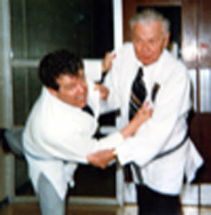
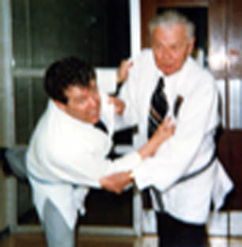

John G. Diefenbaker - Canada's 13th Prime Minister
Diefenbaker was presented with his black belt on June 22, 1979 at the Canadian Junior Nationals held in Prince Albert.
Diefenbaker died in August of that same year.
~Thanks to Kate Wittman for digging out these photos~

 
